Page Head
Page <head /> contains Metadata and CSS bundle files for theme. We use special section AddLocalStyles, to import styles for specific plugins on pages that need it.
<!DOCTYPE html>
<html>
<head>
<meta http-equiv="Content-Type" content="text/html; charset=utf-8"/>
<meta charset="utf-8" />
<meta name="viewport" content="width=device-width, initial-scale=1.0">
<title>INSPINIA | @ViewBag.Title</title>
<!-- Add local styles, mostly for plugins css file -->
@if (IsSectionDefined("AddLocalStyles"))
{@RenderSection("AddLocalStyles", required: false)}
<!-- Primary Inspinia style -->
@Styles.Render("~/Content/css")
@Styles.Render("~/font-awesome/css")
</head>
Main file structure
IMPORTANT - Main stucture of _Layout.cshtml file.
<!-- Skin configuration box -->
@Html.Partial("_SkinConfig")
<!-- Wrapper-->
<!-- PageClass give you ability to specify custom style for specific view based on action -->
<div id="wrapper" class="@Html.PageClass()">
<!-- Navigation -->
@Html.Partial("_Navigation")
<!-- Page wraper -->
<div id="page-wrapper" class="gray-bg @ViewBag.SpecialClass">
<!-- Top Navbar -->
@Html.Partial("_TopNavbar")
<!-- Main view -->
@RenderBody()
<!-- Footer -->
@Html.Partial("_Footer")
</div>
<!-- End page wrapper-->
</div>
<!-- End wrapper-->
Page Script
On bottom of file are bundle script located. _Layout.cshtml contains all major plugin scripts and Inspinia scripts.
In section Scripts, will be import scripts for specific plugins on pages that need it.
<!-- Section for main scripts render -->
@Scripts.Render("~/bundles/jquery")
@Scripts.Render("~/bundles/bootstrap")
@Scripts.Render("~/plugins/slimScroll")
@Scripts.Render("~/bundles/inspinia")
<!-- Skin config script - only for demo purpose-->
@Scripts.Render("~/bundles/skinConfig")
<!-- Handler for local scripts -->
@RenderSection("scripts", required: false)
Adding Plugin (special styles file and scripts)
To add for example iCheck plugin (plugin for custom checkbox input) at the bottom of page (view) you have to specifie Styles and Scripts with name plugin as example below. Or if you want to add it to entire app you can add it to _Layout file.
@section Styles {
@Styles.Render("~/plugins/iCheckStyles")
}
@section Scripts {
@Scripts.Render("~/plugins/iCheck")
<script type="text/javascript">
$(document).ready(function () {
// Local scripts
});
</script>
}
If you need any help with render section feel free to write me at support@webapplayers.com.
BundleConfig.cs
Bundle contains all neccesery scripts and style. You can add it to any part of your app. With convention:
CSS styles: @Styles.Render("~/plugins/{PluginName}Styles")
JS scripts: @Scripts.Render("~/plugins/{PluginName}")
// CSS style (bootstrap/inspinia)
bundles.Add(new StyleBundle("~/Content/css").Include(
"~/Content/bootstrap.min.css",
"~/Content/animate.css",
"~/Content/style.css"));
// Font Awesome icons
bundles.Add(new StyleBundle("~/font-awesome/css").Include(
"~/fonts/font-awesome/css/font-awesome.min.css"));
// jQuery
bundles.Add(new ScriptBundle("~/bundles/jquery").Include(
"~/Scripts/jquery-2.1.1.min.js"));
// jQueryUI CSS
bundles.Add(new ScriptBundle("~/bundles/jqueryuiStyles").Include(
"~/Scripts/plugins/jquery-ui/jquery-ui.min.css"));
// jQueryUI
bundles.Add(new StyleBundle("~/bundles/jqueryui").Include(
"~/Scripts/plugins/jquery-ui/jquery-ui.min.js"));
// Bootstrap
bundles.Add(new ScriptBundle("~/bundles/bootstrap").Include(
"~/Scripts/bootstrap.min.js"));
// Inspinia script
bundles.Add(new ScriptBundle("~/bundles/inspinia").Include(
"~/Scripts/plugins/metisMenu/metisMenu.min.js",
"~/Scripts/plugins/pace/pace.min.js",
"~/Scripts/app/inspinia.min.js"));
// Inspinia skin config script
bundles.Add(new ScriptBundle("~/bundles/skinConfig").Include(
"~/Scripts/app/skin.config.min.js"));
// SlimScroll
bundles.Add(new ScriptBundle("~/plugins/slimScroll").Include(
"~/Scripts/plugins/slimscroll/jquery.slimscroll.min.js"));
// Peity
bundles.Add(new ScriptBundle("~/plugins/peity").Include(
"~/Scripts/plugins/peity/jquery.peity.min.js"));
// Video responsible
bundles.Add(new ScriptBundle("~/plugins/videoResponsible").Include(
"~/Scripts/plugins/video/responsible-video.js"));
// FancyBox gallery css styles
bundles.Add(new StyleBundle("~/plugins/fancyboxStyles").Include(
"~/Scripts/plugins/fancybox/jquery.fancybox.css"));
// Morriss chart
bundles.Add(new ScriptBundle("~/plugins/fancybox").Include(
"~/Scripts/plugins/fancybox/jquery.fancybox.js"));
// Sparkline
bundles.Add(new ScriptBundle("~/plugins/sparkline").Include(
"~/Scripts/plugins/sparkline/jquery.sparkline.min.js"));
// Morriss chart css styles
bundles.Add(new StyleBundle("~/plugins/morrisStyles").Include(
"~/Content/plugins/morris/morris-0.4.3.min.css"));
// Morriss chart
bundles.Add(new ScriptBundle("~/plugins/morris").Include(
"~/Scripts/plugins/morris/raphael-2.1.0.min.js",
"~/Scripts/plugins/morris/morris.js"));
// Flot chart
bundles.Add(new ScriptBundle("~/plugins/flot").Include(
"~/Scripts/plugins/flot/jquery.flot.js",
"~/Scripts/plugins/flot/jquery.flot.tooltip.min.js",
"~/Scripts/plugins/flot/jquery.flot.resize.js",
"~/Scripts/plugins/flot/jquery.flot.pie.js",
"~/Scripts/plugins/flot/jquery.flot.spline.js"));
// Rickshaw chart
bundles.Add(new ScriptBundle("~/plugins/rickshaw").Include(
"~/Scripts/plugins/rickshaw/vendor/d3.v3.js",
"~/Scripts/plugins/rickshaw/rickshaw.min.js"));
// ChartJS chart
bundles.Add(new ScriptBundle("~/plugins/chartJs").Include(
"~/Scripts/plugins/chartjs/Chart.min.js"));
// iCheck css styles
bundles.Add(new StyleBundle("~/plugins/iCheckStyles").Include(
"~/Content/plugins/iCheck/custom.css"));
// iCheck
bundles.Add(new ScriptBundle("~/plugins/iCheck").Include(
"~/Scripts/plugins/iCheck/icheck.min.js"));
// dataTables css styles
bundles.Add(new StyleBundle("~/plugins/dataTablesStyles").Include(
"~/Content/plugins/dataTables/dataTables.bootstrap.css",
"~/Content/plugins/dataTables/dataTables.responsive.css",
"~/Content/plugins/dataTables/dataTables.tableTools.min.css"));
// dataTables
bundles.Add(new ScriptBundle("~/plugins/dataTables").Include(
"~/Scripts/plugins/dataTables/jquery.dataTables.js",
"~/Scripts/plugins/dataTables/dataTables.bootstrap.js",
"~/Scripts/plugins/dataTables/dataTables.responsive.js",
"~/Scripts/plugins/dataTables/dataTables.tableTools.min.js"));
// jeditable
bundles.Add(new ScriptBundle("~/plugins/jeditable").Include(
"~/Scripts/plugins/jeditable/jquery.jeditable.js"));
// jqGrid styles
bundles.Add(new StyleBundle("~/plugins/jqGridStyles").Include(
"~/Content/plugins/jqGrid/ui.jqgrid.css"));
// jqGrid
bundles.Add(new ScriptBundle("~/plugins/jqGrid").Include(
"~/Scripts/plugins/jqGrid/i18n/grid.locale-en.js",
"~/Scripts/plugins/jqGrid/jquery.jqGrid.min.js"));
// codeEditor styles
bundles.Add(new StyleBundle("~/plugins/codeEditorStyles").Include(
"~/Content/plugins/codemirror/codemirror.css",
"~/Content/plugins/codemirror/ambiance.css"));
// codeEditor
bundles.Add(new ScriptBundle("~/plugins/codeEditor").Include(
"~/Scripts/plugins/codemirror/codemirror.js",
"~/Scripts/plugins/codemirror/mode/javascript/javascript.js"));
// codeEditor
bundles.Add(new ScriptBundle("~/plugins/nestable").Include(
"~/Scripts/plugins/nestable/jquery.nestable.js"));
// validate
bundles.Add(new ScriptBundle("~/plugins/validate").Include(
"~/Scripts/plugins/validate/jquery.validate.min.js"));
// fullCalendar styles
bundles.Add(new StyleBundle("~/plugins/fullCalendarStyles").Include(
"~/Content/plugins/fullcalendar/fullcalendar.css"));
// fullCalendar
bundles.Add(new ScriptBundle("~/plugins/fullCalendar").Include(
"~/Scripts/plugins/fullcalendar/moment.min.js",
"~/Scripts/plugins/fullcalendar/fullcalendar.min.js"));
// vectorMap
bundles.Add(new ScriptBundle("~/plugins/vectorMap").Include(
"~/Scripts/plugins/jvectormap/jquery-jvectormap-1.2.2.min.js",
"~/Scripts/plugins/jvectormap/jquery-jvectormap-world-mill-en.js"));
// ionRange styles
bundles.Add(new StyleBundle("~/plugins/ionRangeStyles").Include(
"~/Content/plugins/ionRangeSlider/ion.rangeSlider.css",
"~/Content/plugins/ionRangeSlider/ion.rangeSlider.skinFlat.css"));
// ionRange
bundles.Add(new ScriptBundle("~/plugins/ionRange").Include(
"~/Scripts/plugins/ionRangeSlider/ion.rangeSlider.min.js"));
// dataPicker styles
bundles.Add(new StyleBundle("~/plugins/dataPickerStyles").Include(
"~/Content/plugins/datapicker/datepicker3.css"));
// dataPicker
bundles.Add(new ScriptBundle("~/plugins/dataPicker").Include(
"~/Scripts/plugins/datapicker/bootstrap-datepicker.js"));
// nouiSlider styles
bundles.Add(new StyleBundle("~/plugins/nouiSliderStyles").Include(
"~/Content/plugins/nouslider/jquery.nouislider.css"));
// nouiSlider
bundles.Add(new ScriptBundle("~/plugins/nouiSlider").Include(
"~/Scripts/plugins/nouslider/jquery.nouislider.min.js"));
// jasnyBootstrap styles
bundles.Add(new StyleBundle("~/plugins/jasnyBootstrapStyles").Include(
"~/Content/plugins/jasny/jasny-bootstrap.min.css"));
// jasnyBootstrap
bundles.Add(new ScriptBundle("~/plugins/jasnyBootstrap").Include(
"~/Scripts/plugins/jasny/jasny-bootstrap.min.js"));
// switchery styles
bundles.Add(new StyleBundle("~/plugins/switcheryStyles").Include(
"~/Content/plugins/switchery/switchery.css"));
// switchery
bundles.Add(new ScriptBundle("~/plugins/switchery").Include(
"~/Scripts/plugins/switchery/switchery.js"));
// chosen styles
bundles.Add(new StyleBundle("~/plugins/chosenStyles").Include(
"~/Content/plugins/chosen/chosen.css"));
// chosen
bundles.Add(new ScriptBundle("~/plugins/chosen").Include(
"~/Scripts/plugins/chosen/chosen.jquery.js"));
// knob
bundles.Add(new ScriptBundle("~/plugins/knob").Include(
"~/Scripts/plugins/jsKnob/jquery.knob.js"));
// wizardSteps styles
bundles.Add(new StyleBundle("~/plugins/wizardStepsStyles").Include(
"~/Content/plugins/steps/jquery.steps.css"));
// wizardSteps
bundles.Add(new ScriptBundle("~/plugins/wizardSteps").Include(
"~/Scripts/plugins/staps/jquery.steps.min.js"));
// dropZone styles
bundles.Add(new StyleBundle("~/plugins/dropZoneStyles").Include(
"~/Content/plugins/dropzone/basic.css",
"~/Content/plugins/dropzone/dropzone.css"));
// dropZone
bundles.Add(new ScriptBundle("~/plugins/dropZone").Include(
"~/Scripts/plugins/dropzone/dropzone.js"));
// summernote styles
bundles.Add(new StyleBundle("~/plugins/summernoteStyles").Include(
"~/Content/plugins/summernote/summernote.css",
"~/Content/plugins/summernote/summernote-bs3.css"));
// summernote
bundles.Add(new ScriptBundle("~/plugins/summernote").Include(
"~/Scripts/plugins/summernote/summernote.min.js"));
CodeTemplates and Scaffolding
In CodeTemplates we add special customized template for Scaffolding. If you run app and go to Scaffolding page then you will see a full generated code and views with customized look and feel for Inspinia theme.
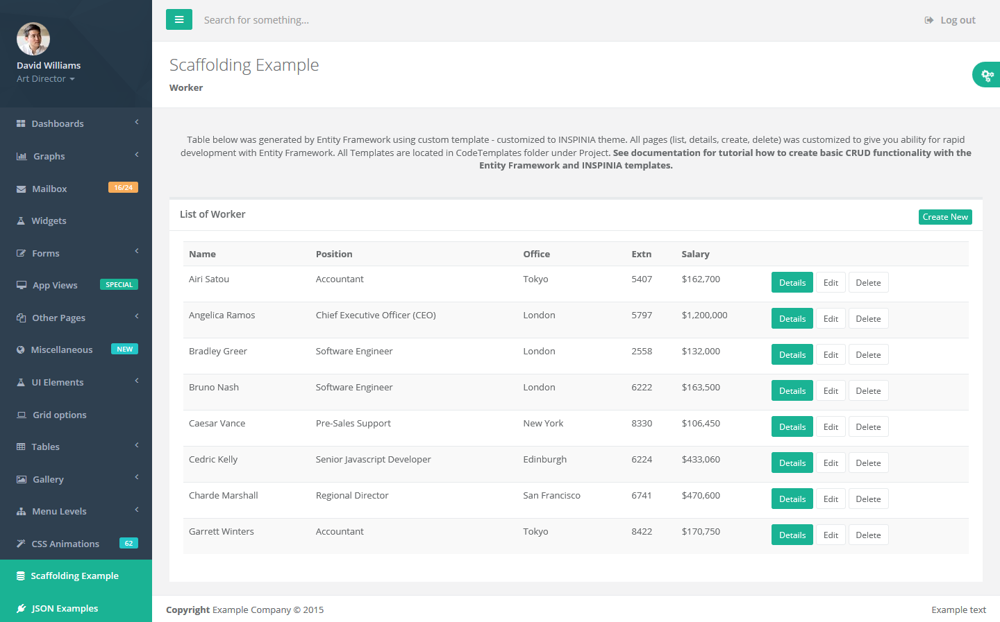
Scaffolding Tutorial
In this section we will show you have to go throw scaffolding with customized template on Inspinia MVC5 SeedProject.
When you open Inspinia Seed Project you will see in Solution Explorer folder CodeTemplates.
This folder contains scaffolding templates. This folder must have the CodeTemplates name.
Entity framework first check for this folder in solution and if he find it he will use templates from there.
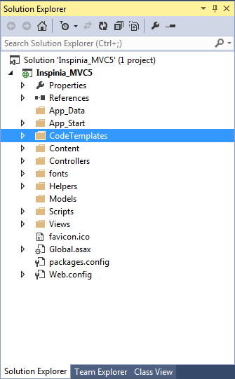
Lets add simple model for our demo purpose.
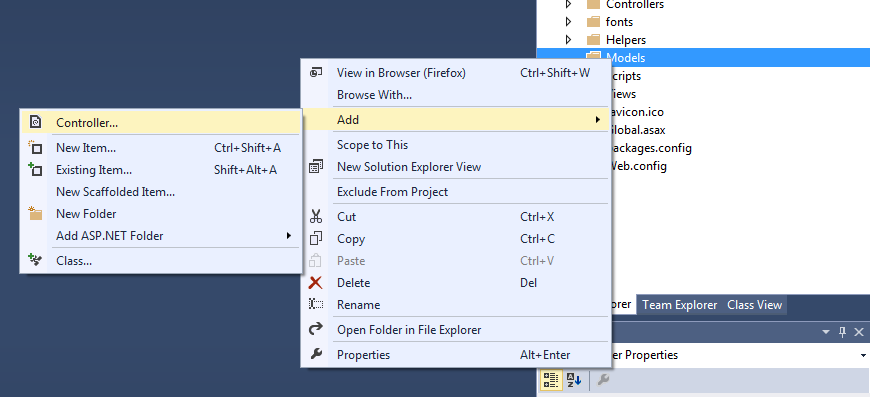
Select Empty controller
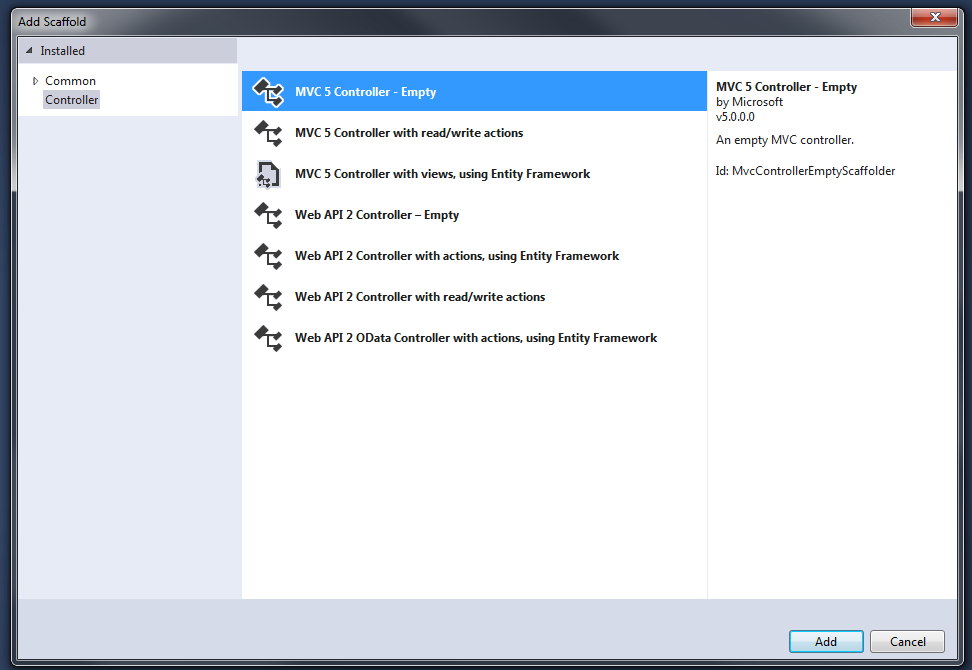
Enter controller name
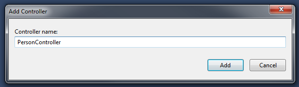
Write bacis Person model with {Id, FirstName, LastName, Position}
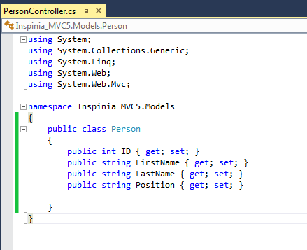
After save build project
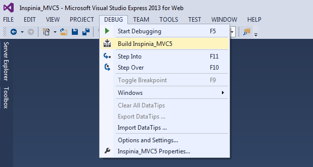
Next creat scaffolding controller and views
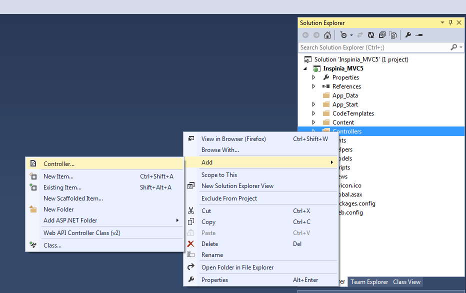
Select MVC5 Controller with view, using Entity Framework
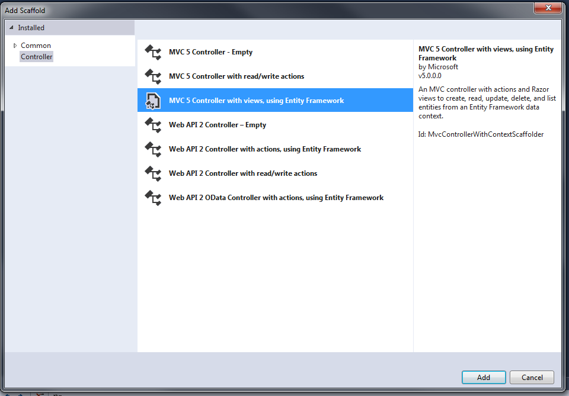
Add name and use Person model
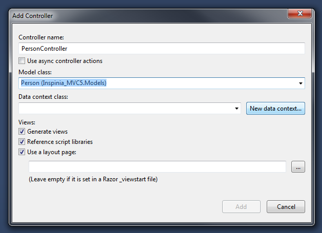
Next click to New data context and set a name for context
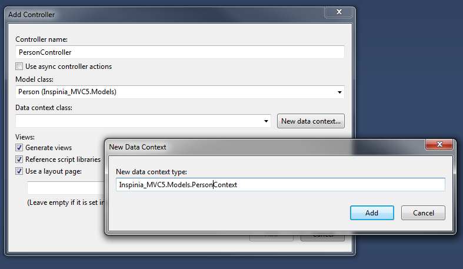
Once more build project to creat connection
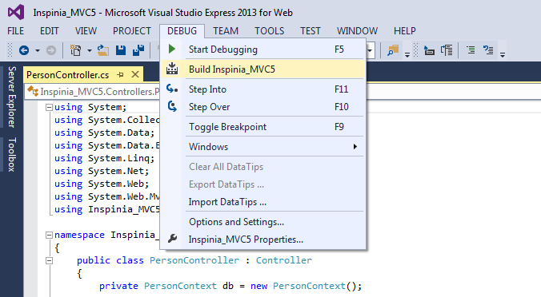
After that go to _Navigation file and add menu item to Person view as below
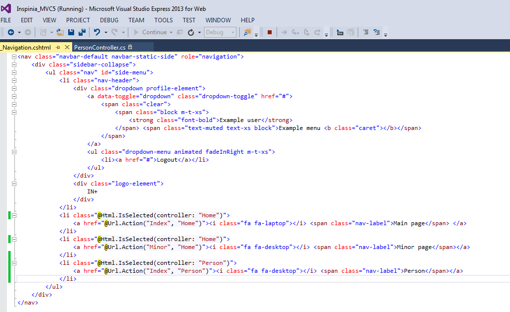
When you run app go to Person menu and you will see a empty table. Click create new
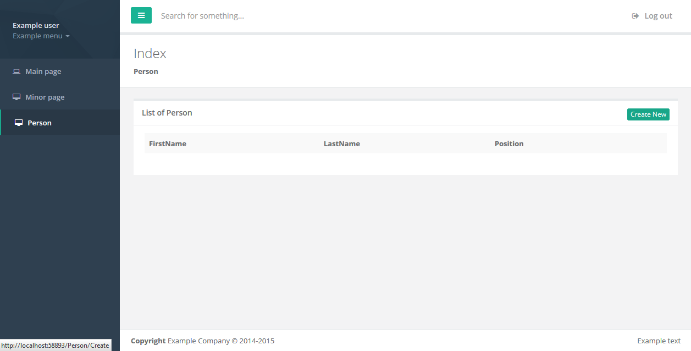
Add some example data
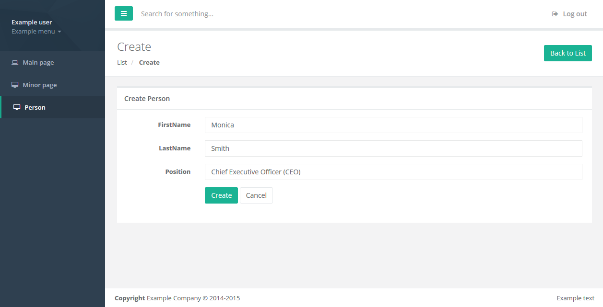
After that you will have a first person in your database
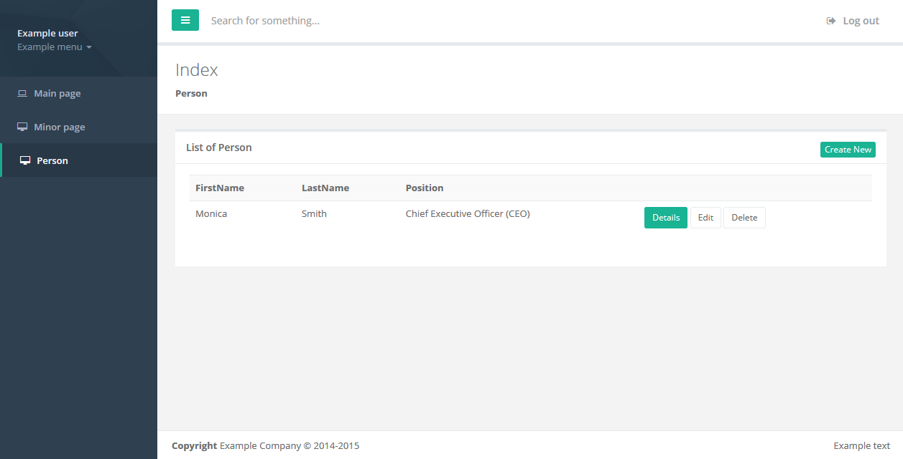
Using Scaffolding and Inspinia templates you can creat simple and fast basic app wtih nice look and feal writing only a model!!
MVC_Seed_Project
It is an application skeleton for a typical ASP.NET MVC5 web app. You can use it to quickly bootstrap your mvc webapp projects and dev environment for these projects.
It is a best start for new app. It has needed scripts and style and CodeTemplates for Scaffolding.
Any Questions? Need help ?
Contact as with email: support@webapplayers.com